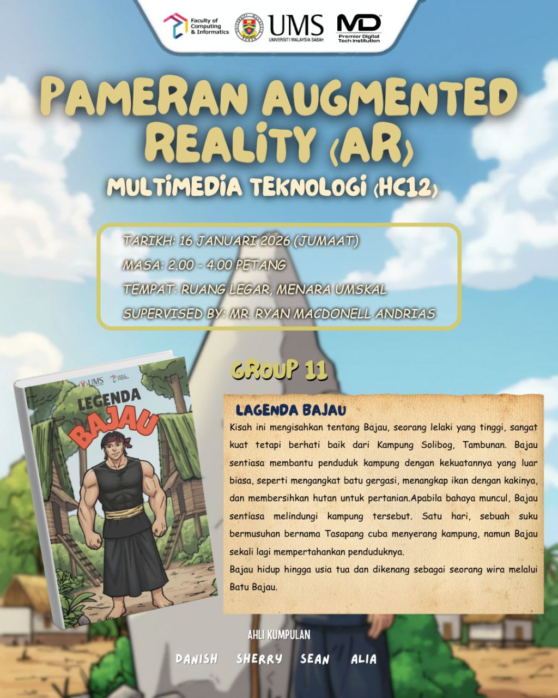

Achievment
E-Commerce Redesign
A complete UI overhaul for a fashion retailer using Grid layout and modern typography.
Design Frontend

Augmented Reality (AR)
This Augmented Reality (AR) project blends interactive digital elements with the real world to enhance user engagement and storytelling. Designed for educational and creative purposes, it showcases my skills in AR development, visual design, and immersive user experience.
3D Assets Xampp

Faculty's representative
Currently as Presiden Persatuan Mahasiswa Fakulti Komputeran dan Informatik (PMFKI)
Leadership Motivation